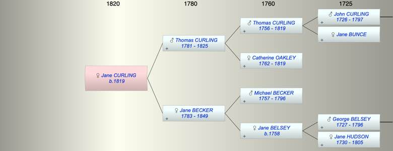

| [Index] |
| Jane CURLING (1819 - ) |
|  |
| b. 1819 |
| Parents: |
| Thomas Oakley CURLING (1781 - 1825) |
| Jane BECKER (1783 - 1849) |
| Events in Jane CURLING (1819 - )'s life | |||||
| Date | Age | Event | Place | Notes | Src |
| 1819 | Jane CURLING was born | ||||
| 1825 | 6 | Death of father Thomas Oakley CURLING (aged 44) | |||
| 1849 | 30 | Death of mother Jane BECKER (aged 66) | |||
| Created on a Mac™ using iFamily for Mac™ on 8 Oct 2023 |